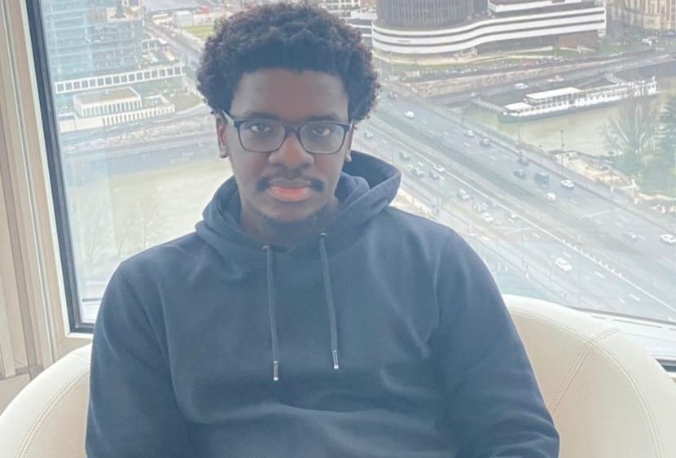

À propos de moi
Je m'appelle Franklin Essono, j'ai 23 ans et je suis un ingénieur logiciel passionné par l'analyse de données et le développement web.
Mon parcours académique
Originaire de Libreville au Gabon, j'ai entamé mon parcours d'études supérieures en France en 2021. Après l'obtention de mon baccalauréat en 2020, j'ai rejoint la France pour poursuivre mes études dans le domaine informatique. J'ai d'abord obtenu un BTS SIO option SLAM à l'institut F2I de Vincennes (2021-2022), que j'ai validé grâce à un stage d'un mois chez Hemmersbach France en tant que développeur web.
Je poursuis actuellement ma formation en école d'ingénieur à l'ESIEA (Ivry-sur-Seine) en spécialité Software Engineering, dans le cadre d'un cycle de 3 ans en alternance.
Mon expérience professionnelle
De septembre 2022 à février 2025, j'ai effectué mon alternance au CEA de Grenoble en tant que data analyst. Cette expérience de près de 3 ans m'a permis de développer une expertise solide dans l'analyse et le traitement de données, particulièrement dans le domaine véhicule, en utilisant principalement Python.
J'ai également acquis des compétences techniques diversifiées en React, Spring Boot, SQL, Figma, Docker, me permettant d'aborder les projets avec une approche polyvalente.
Mes centres d'intérêt
Au-delà de l'informatique, je suis passionné de basketball et j'apprécie particulièrement la lecture. J'aime aussi les défis intellectuels comme les échecs et le sudoku, qui nourrissent mon goût pour la réflexion stratégique.
Sur le plan linguistique, j'ai un niveau B2 en anglais et je me suis récemment lancé dans l'apprentissage de l'espagnol.
Mes perspectives d'avenir
Mon objectif professionnel est de me spécialiser dans le domaine de la data, secteur qui me passionne particulièrement, tout en gardant un pied dans le développement web. Je souhaite continuer à développer mon expertise en analyse de données et contribuer à des projets innovants qui allient technique et impact concret.